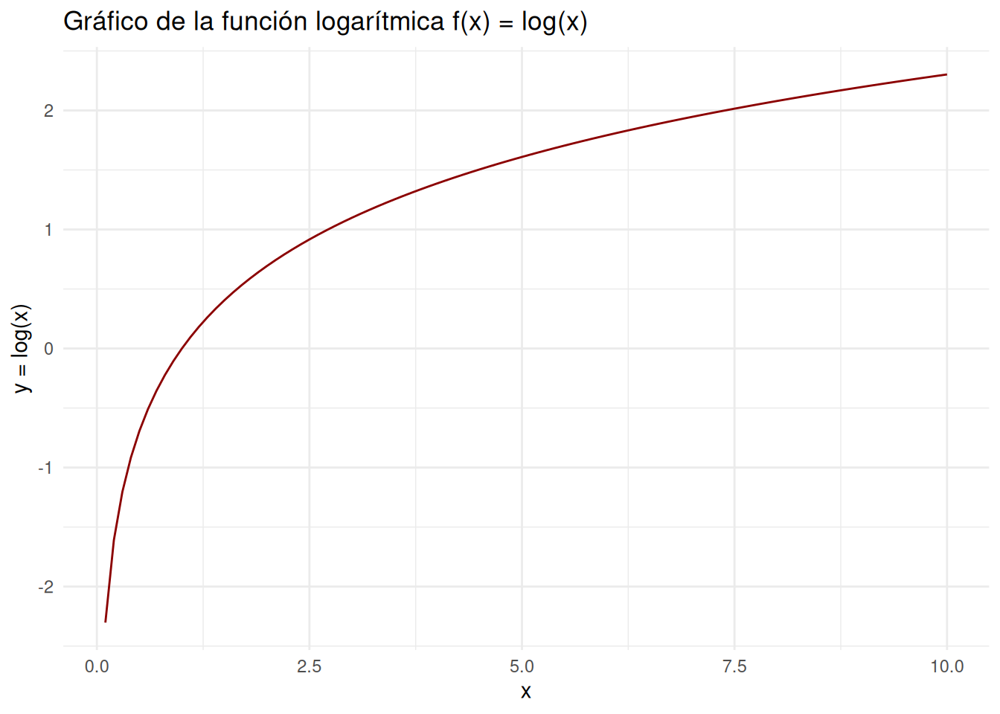

La función logarítmica es la inversa de la función exponencial. Se define como:
\[ f(x) = \log_b(x) \]
Donde: - \(b\) es la base del logaritmo, y debe ser un número positivo distinto de 1. - \(x\) es la variable independiente, y debe ser un número positivo.
Si \(b > 1\), la función es creciente.
Si \(0 < b < 1\), la función es decreciente.
Propiedades Operacionales:
\(\log_b(xy) = \log_b(x) + \log_b(y)\)
\(\log_b\left(\dfrac{x}{y}\right) = \log_b(x) - \log_b(y)\)
\(\log_b(x^y) = y \cdot \log_b(x)\)
\(\log_b(b) = 1\)
\(\log_b(1) = 0\)
Cambio de base: \(\log_b(x) = \dfrac{\log_k(x)}{\log_k(b)}\) donde \(k\) es cualquier base positiva distinta de 1.
library(ggplot2)
# Datos para la función logarítmica
x <- seq(0.1, 10, by = 0.1)
y <- log(x)
data <- data.frame(x = x, y = y)
# Gráfico
ggplot(data, aes(x = x, y = y)) +
geom_line(color = "darkred") +
labs(title = "Gráfico de la función logarítmica f(x) = log(x)",
x = "x",
y = "y = log(x)") +
theme_minimal()
Ejercicio 1:
Grafica la función logarítmica para las bases \(b = 2\), \(b = e\) y \(b = 10\) en el mismo gráfico. Compara cómo cambia la forma de la curva al cambiar la base.
Ejercicio 2:
Utilizando la propiedad de los logaritmos \(\log_b(xy) = \log_b(x) + \log_b(y)\), demuestra que \(\log_2(16) + \log_2(4) = \log_2(64)\).
Ejercicio 3:
Si una población se triplica cada 5 años, ¿cuántos años se necesitarán para que la población se multiplique por 10? Utiliza logaritmos en base 3 para resolverlo.
Ejercicio 4:
Demuestra que \(\log_b\left(\dfrac{x}{y}\right) = \log_b(x) - \log_b(y)\) utilizando valores específicos para \(x\), \(y\), y \(b\).
Ejercicio 5:
Resuelve la ecuación \(\log_5(x) = 2\) y verifica tu respuesta. Luego, interpreta el resultado en términos de la función exponencial.